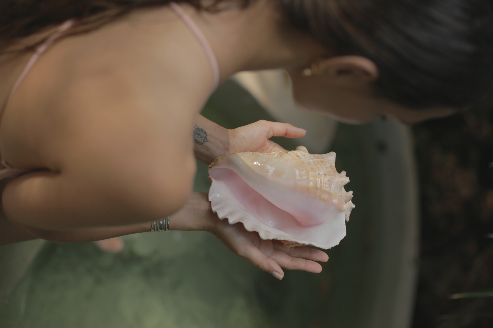
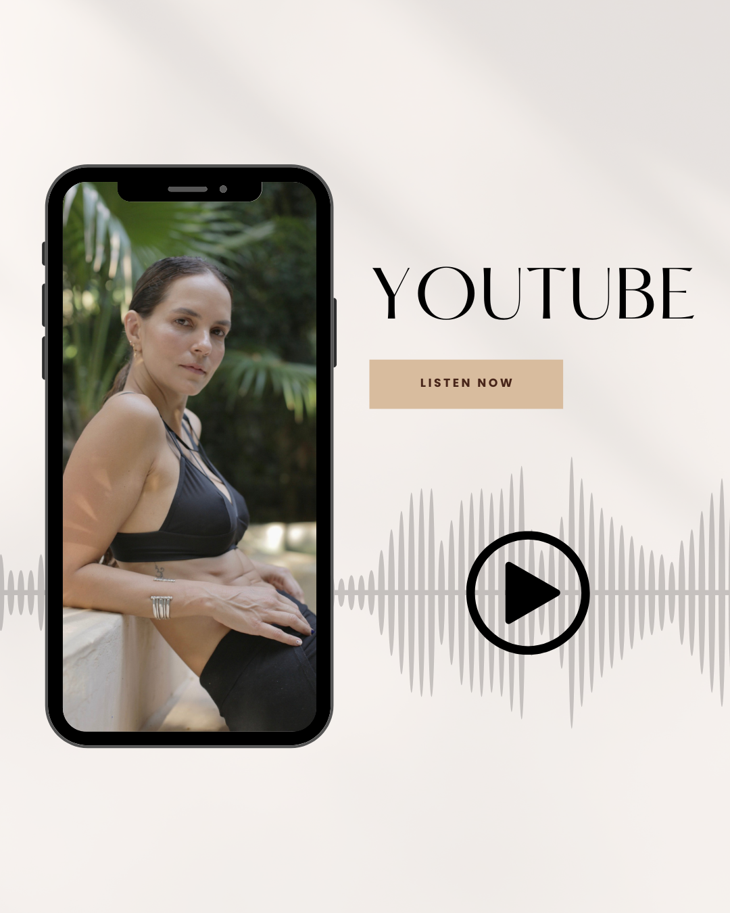
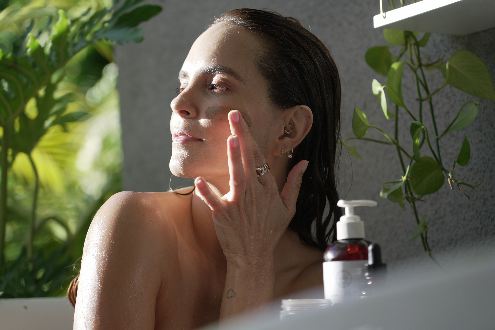
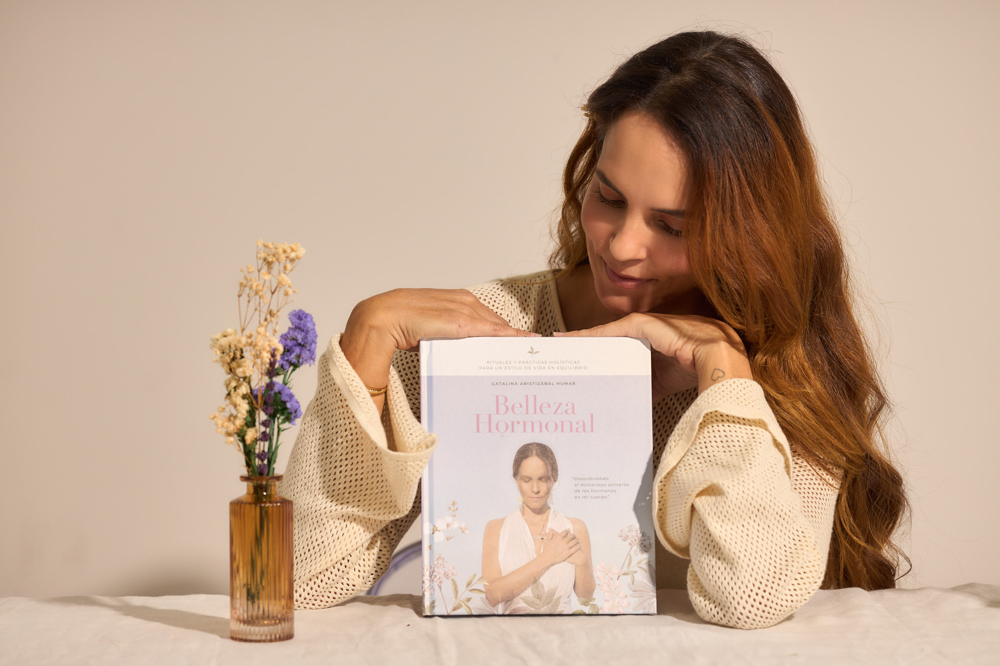
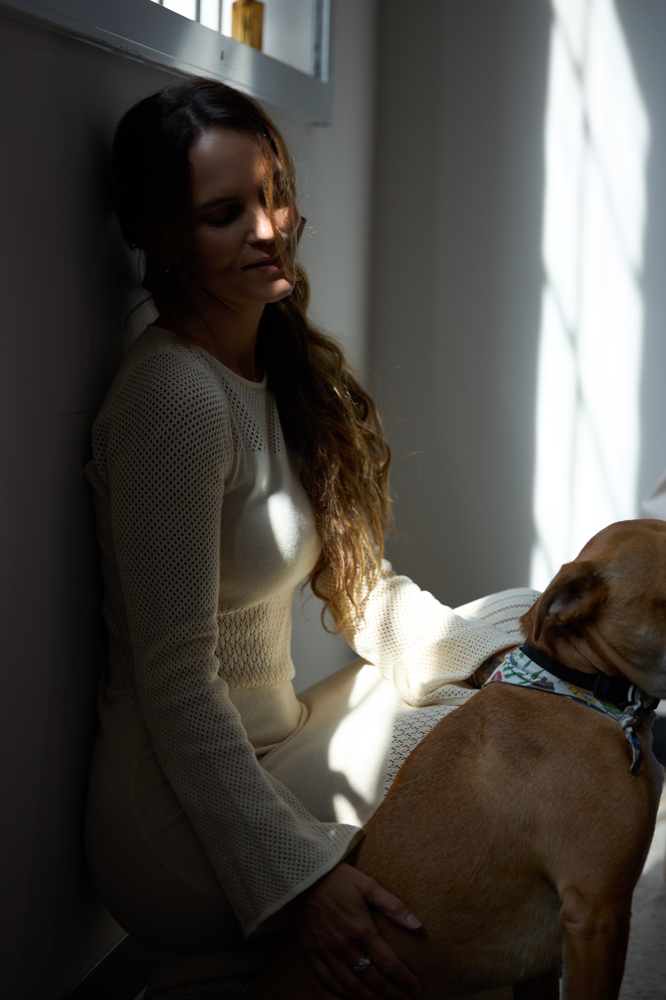

Curso online
Belleza Natural
6 módulos para transformar tu relación con tu cuerpo desde adentro. Nutrición, movimiento, meditación y más.
Ver cursoUna mirada profunda
hacia el equilibrio, la salud y la belleza consciente
Salud, belleza y consciencia
en un mismo camino.

Llegué desde la experiencia. Durante años estudié el cuerpo femenino, las hormonas, la microbiota y los procesos internos que muchas veces no entendemos hasta que nos atraviesan. Mi propio diagnóstico de Hashimoto marcó un antes y un después. Me obligó a mirar hacia adentro, a cuestionar, a investigar y a construir un conocimiento con fundamento.
No creo en soluciones rápidas. Creo en comprensión profunda. Mi trabajo une ciencia, conciencia y experiencia real. He acompañado a mujeres que desean entender su cuerpo, recuperar su energÃÂa y vivir con mayor claridad. No desde la perfección, sino desde el equilibrio.
Soy fundadora de Terra MÃÂstica, autora y educadora en bienestar femenino. Pero más allá de los tÃÂtulos, soy una mujer que decidió convertir el aprendizaje en servicio.
Mi enfoque no es imponer un camino. Es ofrecer claridad para que cada mujer pueda habitar su cuerpo con confianza. Porque la verdadera transformación ocurre cuando comprendemos quiénes somos y cómo funciona nuestro cuerpo.
SÃÂgueme en InstagramCinco caminos hacia el bienestar, la consciencia y la belleza natural.
6 módulos para transformar tu relación con tu cuerpo desde adentro. Nutrición, movimiento, meditación y más.
Ver curso
Contenido sobre salud holÃÂstica, estilo de vida consciente y bienestar. SuscrÃÂbete para ser el primero.
SuscrÃÂbete
Co-fundadora de una lÃÂnea de productos naturales para el bienestar y la belleza consciente.
Explorar tienda
Mi libro sobre el equilibrio hormonal, la belleza desde adentro y cómo entender tu cuerpo femenino para vivir mejor.
Conseguir libro
"La salud no es solo lo que comes.â Catalina Aristizabal
Es todo lo que piensas, sientes y cómo te mueves por la vida."
Comparto recetas, reflexiones, movimiento y todo lo que me apasiona sobre vivir bien.
Seguir en InstagramUn podcast de conversaciones profundas que sanan el alma, la mente y el cuerpo.
Conversaciones que Sanan
con Catalina Aristizabal
No te traiciones por agradar. No apagues tu intuición por miedo. Tu cuerpo siempre sabe la verdad. ElÃÂgete con coherencia, todos los dÃÂas.
â Catalina Aristizabal